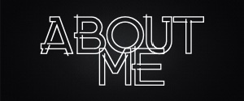

|  |
|---|
To play our game press start! Then it will take you to a directions screen which explains how to play. In order to play you must choose a level and look for the amount of hidden objects dictated by the score displayed on the screen aka 0/5 etc. The user must click where they think is a hidden object and if they are correct a ding sound will happen and their score will go up 1. If they click the wrong spot a splat sound is made. To complete the game you must finish the 4th level and will then have the chance to play again. To get the most out of the game start at level one and keep clicking next until the end screen comes up! Have fun!